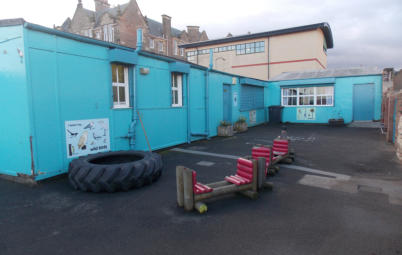
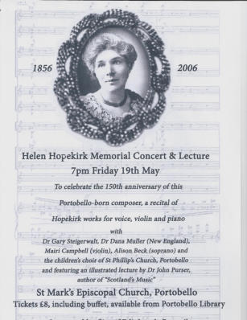
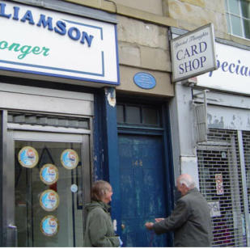
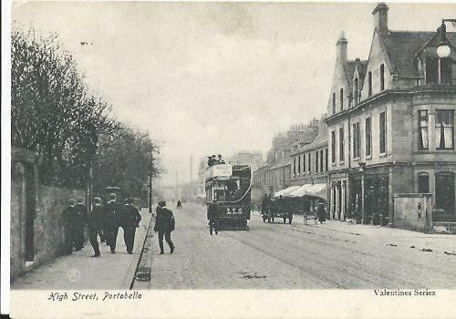
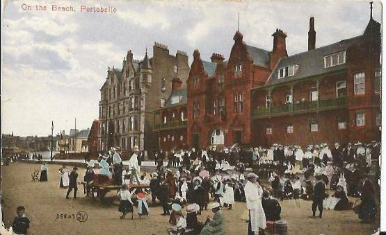
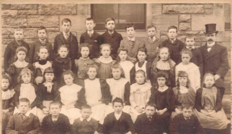
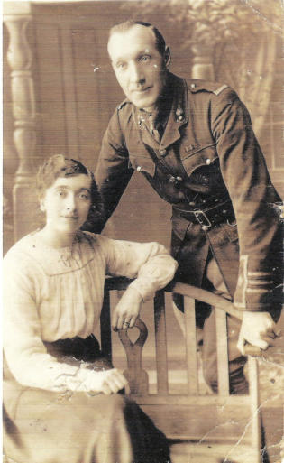
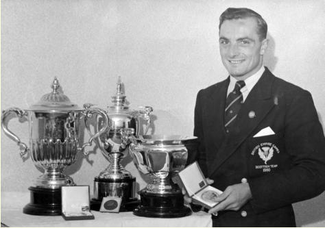
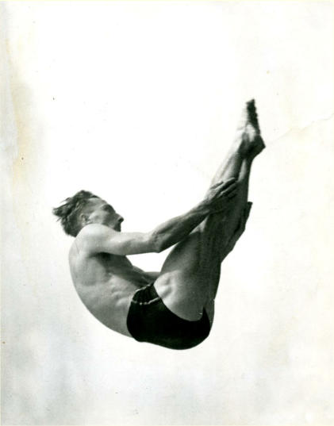
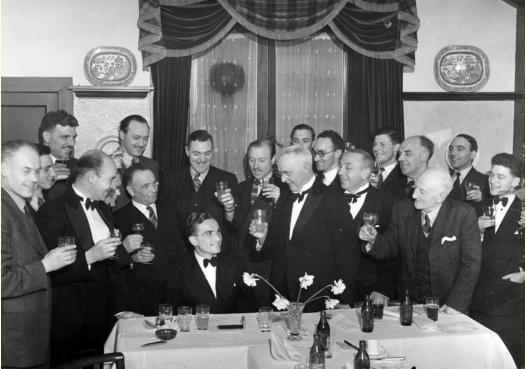

Portobello Heritage - People and places
Toddlers Hut
Back to the future

After a lot of searching, the first Minute Book for Portobello Toddlers Hut, for the years 1930 to 1955, was found in the Museum of Childhood. A group of local ladies had formed a committee to provide a place to play for some of the less fortunate children in the community and the Minutes tell the story of how it was funded.There were probably earlier unrecorded meetings, but the first recorded was held on Tuesday, 7th October 1930 and the Minutes show that " … the Town Council were willing that the open space of ground at the foot of Tower Street [now Figgate Street] should be given for the purposes of a playground with some necessary alterations to the shelter. Some discussion took place with regard to heating and sanitary arrangements and the matter was left over for further investigation." There was only £60 in the bank account, so fund-raising was discussed, such as bridge or whist parties, appeals to local churches and local doctors and their wives who had previously supported the committee. The ladies decided that the shelter in the playground at the foot of Tower Street was not a suitable place as it lacked sanitary facilities and had no heating. On 2nd December it was stated that: "The Leith Committee had built a Hut for themselves. There was a piece of ground at the foot of Ramsay Lane which the Town Council were willing to give the Committee. The draining and Tar Macadaming would cost £90 and £10 for repairing the wall. It was hoped the Town Council would bear the expense. The cost of the Hut would be about £200. The Committee unanimously agreed that it would be better to go with the building of a hut. The Treasurer was instructed to open a new account at the Bank so that the Hut money would be kept apart from the working expenses." There had been little success with fund-raising. On 20th January 1931: "A letter was read from the Depute Town Clerk stating that the Council would likely include in next year’s estimates for the levelling etc. of the ground at the foot of Ramsay Lane. They were prepared to lease the ground to the Committee for a period of 5 years at a nominal rent of £1 a year. It was left to Mrs Anderson and the Secretary to get information about the Leith Hut from the City Architect and if possible to get a plan." By now fund-raising had been more successful and there was £30 and 8 shillings in the Hut bank account.In July, plans for the Hut were sent to local firms and, in October, Brown & Grieve’s estimate of £260 was accepted for the building, which would be heated by electricity and have a gas ring. It was to be insured for £300. There was now £169 and 6 shillings in the bank account, with £50 still to come. The Hut was opened on Saturday, 14th November by Harriet, Lady Findlay, on "an appallingly wet day"
By 2nd February, 1932, a piano had been bought for £4 and, after paying all the bills, which included buying kettles, chairs, a gas ring and paying the insurance, there was £286 4 shillings and 3 pence in the account.Two months later: "The bills for electric light were considered heavy … It was left to the Secretary to make a business arrangement with parties willing to rent the Hut. The Hut was to be assessed at £9, therefore it could be let". The Girls’ Friendly Society and the Salvation Army rented the Hut, which helped pay the bills.In March 1934, the Police asked if they could use the Hut in the summer as a shelter for lost children and a rental of £22 and 10 shillings was paid for nine weeks use. It was reported in August that the Police scheme had been a great success and that 365 lost children had been helped in July, including 70 lost on one Sunday. This shows how busy Portobello beach was, with children easily losing sight of their families in the crowds. The Police continued to use the Hut for many years.
If you have any memories or photographs of the Toddlers Hut you would like to share, please contact us via the website
Toddlers Hut Photo gallery
HELEN HOPEKIRK (1856 - 1945)
Pianist and Teacher

Born on 20 May 1856, at what is now 148 – 150 Portobello High Street, Helen Hopekirk was the second child of Helen Croall and Adam Hopekirk, a printer, bookseller and piano retailer. She received her earliest piano training from Miss Stone, governess of Windsor Lodge Academy in Portobello, where she performed in public for the first time in July 1868. While in her teens Hopekirk attended the Edinburgh Institution for the Education of Young Ladies at 23 Charlotte Square. She continued piano instruction under Hungarian pianist George Lichtenstein, studied music theory with Alexander MacKenzie, and appeared as soloist with the Edinburgh Amateur Orchestra Society on three occasions. Fulfilling her father’s dying wish, Hopekirk continued her musical education under Louis Maas, Salomon Jadassohn and Carl Reinecke at the Leipzig Conservatorium in 1876.By her mid-twenties Hopekirk had appeared with the orchestras of the Gewandhaus in Leipzig and the Crystal Palace in London. She married William A. Wilson (1853-1926), partner in the Edinburgh rope and twine manufacturing firm of Lees & Wilson, on 4 August 1882, thereafter adopting the stage name “Mme. Helen Hopekirk.” For several years Wilson limited his business activity in order to manage Hopekirk’s career. He organized two arduous tours of Great Britain for her in 1880 and 1881, encompassing a total of 42 recital, chamber music and orchestral appearances. Having garnered a repertoire “probably larger than that of any other pianist save Rubinstein” (Boston Evening Traveller), she followed her British successes with an extended tour of the United States in 1883-1886, giving recitals in New York, Brooklyn, Chicago and Boston, among other cities, and presenting as many as four different programmes in as few as twelve days. Lauded for her technique and prodigious memory, the Chicago Tribune remarked that her well-attended recitals had done “more for musical taste than any recitals previously given in Chicago.” After her American tour Hopekirk wished to study piano again under a master teacher. Her first choice, Franz Liszt, died before she could join his class in Bayreuth, but her second, Theodor Leschetizky, became the single greatest influence on her playing and teaching. Working with Leschetizky in Vienna for extended periods in the mid- to late 1880’s, she acquired the expanded tonal variety that was possible through his approach, integrating finger technique with use of the wrist, arm and shoulder. Years later Hopekirk wrote journal articles in which she recounted Leschetizky’s principles for the benefit of other teachers and performers.
Hopekirk’s second American tour (1891-1892) comprised recitals as well as appearances with orchestras under some of the foremost conductors of the period, including Arthur Nikisch, Walter Damrosch and Theodore Thomas. Returning once more to Europe, Hopekirk reduced her performing and teaching activities to allow more time for composition. When Wilson suffered severe injury in a London traffic accident in January 1897, however, Hopekirk realized it had become necessary for her to procure a dependable income. Accepting an invitation from Leipzig schoolmate George Chadwick to become head of the piano department at the New England Conservatory, she and Wilson moved to Boston in the autumn of 1897. She remained at the Conservatory for four years, thereafter continuing to teach privately in her home in Brookline, Massachusetts, and to perform in major venues throughout New England. After 1900, Hopekirk’s interests increasingly turned toward the work of late Romantic and Impressionist French composers. She gave the American premieres of Vincent d’Indy’s Piano Quartet and Gabriel Fauré’s Piano Quintet with members of the Kneisel Quartet in 1902 and 1907, respectively, and her performances of solo works by Claude Debussy were among the first heard by Boston audiences. Her last extended stay in Scotland came in 1919-1920, when she presented her piano concerto in performances with the Scottish Orchestra under Landon Ronald.The list of her performances in the United States and Canada grew to include, in addition to nearly 200 solo recitals, twelve appearances as soloist with the Boston Symphony Orchestra (twice in her own compositions) and multiple collaborations with Boston-based chamber groups and soloists. At age 82, she gave her last public performance in a Boston recital devoted entirely to her own compositions. She died in Cambridge, Massachusetts on 19 November 1945.
Helen Hopekirk was best known as a pianist and teacher during her lifetime, but composition remained a strong interest throughout her career. While attending classes at the Leipzig Conservatory, she wrote short piano pieces and vocal selections that combined aspects of art and parlour song. Following additional study with Carl Nawratil in Vienna in the late 1880s and with Richard Mandl in Paris in the early 1890’s, she scaled down her performance schedule in favor of composition. Devoting winters to teaching and limited performing, and summers solely to composition, Hopekirk added many large-scale works to her oeuvre during the last decade of the 19th century, including two sonatas for violin and piano, Concertstück in D Minor and Concerto in D Major (now lost) for piano and orchestra; six short works for orchestra without soloist, and an unfinished piano trio.When she and Wilson relocated to Boston in 1897, Hopekirk became the only foreign-born member of the city’s famous circle of composers that included George Chadwick, Amy Beach, Arthur Foote and Mabel Daniels. Many of her piano compositions during the first two decades of the twentieth century reflect Baroque and contemporary French influences encouraged by her repertoire interests as a player. The most distinctive elements of Hopekirk’s music after 1900, however, came from her Scottish heritage. During the summers of 1901 to 1908, she investigated the music of the Scottish Hebrides and made frequent trips to Iona and her beloved Edinburgh. These experiences, along with her friendship with Marjorie Kennedy-Fraser and close readings of poetry by Fiona Macleod, provided inspiration for a spate of folk-inspired songs and character pieces for piano in the last thirty years of her career.This very successful concert of songs and works for piano and violin composed by Hopekirk was organised by Portobello Community Council with the support of City of Edinburgh Council and aided by a grant from the Hope Scott Trust. Two academic musicians and performers, Drs Gary Steigerwalt and his wife Dana Muller, assembled the programme and travelled from their home in South Hadley, Massachusetts, where Gary is Professor of Music at Mount Holyoke College, to perform in Portobello. Prior to the recital composer, writer and musicologist, Dr John Purser, author of Scotland’s Music, gave an illustrated talk on Hopekirk and her times.

Commemorative PlaquePortobello Community Council also commissioned a plaque to honour Hopekirk and this was erected above the street door at 148 Portobello High Street. The plaque was unveiled on Sunday 21st May by Mr William Hopekirk, Helen Hopekirk’s last surviving relative in Scotland. Donations towards the cost of the plaque were received from a number of persons in Massachusetts who had benefited from Hopekirk’s influence as a teacher in Boston.
Some Characters and Shopkeepers of Portobello
Portobello High Street

(This article is taken from the transcript of a talk given by M r Marshall to the Portobello Probus Club in the late 1980s and originally appeared in Past Times Issue No.1, Winter 1991, published by Portobello History Society. Portobello High Street has undergone massive changes since Mr Marshall gave his talk but we have not altered what he said as his words are now an historic record in their own right. We suggest that, where possible, people use the article to retrace Robert Marshall’s footsteps and log the changes for themselves.

SWith the passing of time Portobello has changed. In 1900 the population was approximately 9,600. Today it is much more, by many thousands. To me, one of the changes has been the lack of characters such as I knew in those far-off days – Poker Dick; Coffin Bobby; Daddy Good; Granny Shepherd and many others. So gentlemen lets wander through Portobello from east to west, starting at the corner of Pittville Street and see how many shops and characters I can remember. I hasten to add however that I make no apology for omissions or mistakes. The first shop was a chemist (and still is) owned by Mr Fraser. In those days it was a chemist and not a drug store. When I used to go into this shop as a boy for my pennyworth of arrowroot or liquorice I was fascinated with the array of bottles on the shelves at the back of the counter. They were brown with gold band lettering in, I presume, Latin- but Greek to me! Little did I think then that fifty years later I would buy 2 dozen of them as antiques and sell them to a friend, but I did. I just wonder what you would keep to-day that would be considered antiques 50 years on; but that could be an idea for a future programme.
The start point at the top of Pittville Street.
Mr Fraser lived at 3 Abercorn Terrace and at that time I lived at 312 High Street opposite. Every Sunday Mr Fraser and his wife went for a walk and he would come out first and leave his wife to shut the door and gate, and by that time he was about 15 yards along the road and when they came back he was still 15 yards in front of her. I never saw them walk together/ I am sure if he was alive to-day Women’s Lib would have a name for him!!!I can’t remember the next shop (Miss Duncan?) but the shop, now a hairdresser, was a fruit shop belonging to D.L. Brown. This was a busy shop where you could get a pennyworth of carrots and turnip. The Good Old Days??The next shop, now a Chinese restaurant, was divided into two shops – Leslie, the Jeweller, and Pullars of Perth (Campbell P&P?) An interesting thing about this shop is that at one time it was one shop and belonged to J. Tait, the butcher. Before 1900 Mr. Tait had two shops, further along in Portobello, but we will forget that for the moment. He moved again, along to the present butcher’s – strange to say, another Tait. I don’t know if J. Tait when he moved there made a house into a shop, but it certainly was a house before it was a shop. Even when I took over this shop in 1933 the kitchen range was still in the back shop.I must tell you of an item slip I found in the office of that shop. It belonged to J. Tait, dated1900, and the first item was – leg of lamb – 1/6d; steak 9d and another two items, I can’t recall what they were, but the total was 4/7d, but at the bottom of the slip in beautiful handwriting “With grateful thanks, paid 1904” so they had slow payers in those days too!!
So back to Leslie’s, Jewellers. I can’t remember what the next small shop was (Gibson, Milliners?) but the next one, now Moulds, the grocers, belonged to “Juicy” Robinson, J.P. and was the shop for all the youngsters to hang about. “Juicy” was very good to the kids of that area and on school holidays we were allowed into the cellars below to wash bottles and stick on labels, as beer and stout were bottled there. I can even remember the colour of the labels – one red, the other green; of course we always got something for helping, but there were times when he got fed up with us all and he would chase us down the lane to play football (he could always whistle for anyone to go a message.) Playing football was alright until one the Police closed all exists from the lane and caught the lot. They were taken to court and fined 5/- - that must have been about 1917 and at today’s prices you could knock down a person with a car and get fined less.There is an interesting part about the top of that Lane – the two houses at the back of the grocers were enclosed by a gate at the top and before you entered the lane proper. At one time this must have been private property and was called Kirks Place and you will see the name on the wall of the grocers. The gate at the top was very high, made of iron, and when someone closed it. It was impossible for us to open or even climb over. “Juicy” had only one son and he was killed in the 1914-18 War. “Juicy” was never the same man again and one morning he was found dead in the shop. We kids lost a father-figure that day.At the foot of the lane, where the Baths Laundry is, used to be Jimmy Banks’ stables and when the horses brought Jimmy back at teatime we got the pleasure of driving the horse and cart down the lane, but considering the horse had brought Jimmy back from Leith or Musselburgh it did not need much driving from us!On the Prom lived a man we called Buffalo Bill; he dressed like him – skin jacket with frills, large Stetson and fancy boots. He worked with Buffalo Bill when he toured this country. The visitors to the Prom used to stop him and talk and there was no doubt he was interesting because he travelled a bit.In front of the Baths in the summertime a Mr Stewart, who came from the West, had children’s meetings, and there was always plenty of kids there. He would have races on the sand etc. and at the end of the summer we would have a fancy dress parade through the streets – I would think very tame stuff for the kids of today.
Near the Balmoral Hotel there was a sand castle made by one of many of our beachcombers, a fellow named Brown. I don’t remember him but I do remember the fellow named McCleesh, who had only one leg and I am sure many of you will remember him. Every morning he would walk the beach and pick up material for this castle and any money he could find, there was always some. In those days there were many visitors and there was always something to be found. While I am on the Prom let me mention some of the characters one would meet, usually around the foot of Bath Street – of course there were two Pubs there!The most well-known was of course Beef Marshall. He was the local boat hirer, also the beach Safety man. Many ‘Sand-Robins’ helped him, as most of them were unemployed. For the cost of fourpence or sixpence you could hire the boat, and as you can imagine many got into difficulties and someone had to go and rescue them. He had a boatyard at the foot of Pipe Street, but the boats were put on the beach at the beginning of summer and lay there till the season finished. Spider Hunter was a chair attendant, but I think that was only when the pubs were shut.Now let’s go back to the High Street where I left off, to the present James Scott’s shop. The first part of this shop was a fruiterer, another Brown; the centre part, now the entrance to Scott’s was Williamson, fishmonger, and the end part of the shop was a house with a small garden, such as the entrance to Scott’s funeral parlour.
The next shop, the butcher’s, which J. Tait had until 1907, was then taken over by a young man called Ebenezer Forbes. Tait had moved again but this time to Mulberry Place. Forbes was known as Ebby Forbes and he had a very good business. His wife used to come up to the shop in a pony and trap. She was a very handsome woman, tall, and as one would expect from a woman of farming stock, could manage animals. Ebby always came to the shop with a bowler hat on and worked all day with it on. He did very well in that shop until about 1926-30 when things were very difficult in the country, as many of you will remember, but like many men before him he made it too quickly and it went quicker. He had taken to keeping a lot of greyhounds for racing but was not very successful and when I worked for him he seemed to have all the scroungers of Portobello coming into the shop. He was an easy touch and his own worst enemy. I liked working for him although at times he annoyed me as he would be in the back shop “entertaining” his fair weather friends and I could not get the work done as that is the place where the work really takes place in the butcher’s shop. The next shop was a newsagents taken over by Fitzsimons from Mingay about 1915-16 and as one of a long line of paper boys I remember two things about that shop. The first was the early rising and then getting the barrow and going to Portobello Station to collect the papers. Not many of you will know what it was like in those days to climb to the station but I always thought it was like pulling a barrow up Arthur’s Seat, and even when you got to the steps up to the station it was like climbing Waverley Steps. The papers were usually lying on the platform in big bundles too heavy for us to carry so they were slid down the steps. The other thing I remember was a customer they had – Mrs. Baxter, 3 Eastfield. She got a Daily Mail every morning. Now some of you may think that from Fitzsimons to Eastfield is not very far, but at 10 years old or so it seemed miles away.
The shop at the other side of Melville Street was a grocers – P.B. Smith, and that family of Smiths all had the initial ‘B’ in the middle of their name and I remember that J.B. Smith was a reporter with the local papers. Of course there was a lot of ‘B’ Smiths in Portobello at that time!!!
The next small shop was McVey, the Clockmaker, and he did make clocks as I found out when I took over Forbes’ shop. There was one there and much to one of my daughter’s disappointment I threw it out. I never knew she had wanted it and today it would be worth £200 at least.“Sconie” Watt had the shop, now Berry’s. It was a victual dealers much the same as the one in Bread Street, Edinburgh, but he was known more for his girdle scones he made. They were large, triangle shape and were really delicious. “Sconie” used to work in his shirt sleeves rolled up and always a spotless white apron on. He had a military type of appearance and rather strict attitude to us kids, but it was no wonder as when we passed we used to dare each other to scout “Sconie Watt”.The double window shop next door was one of Forsyth the baker’s shops.Miss Fairley was the next one, now Dental Laboratory, and it sold tobacco, snuff and china. This shop, as far as message boys went, was a closed shop for the Marshall Clan as the job was handed down from my oldest brother until it came to me. We had to be in the shop by 4 o’clock and stay there till 6 o’clock to deliver any china that had been bought, but as far as I was concerned, sitting there waiting on orders, was the enjoyment of the smell of tobacco and snuff.The corner shop of Bellfield Lane was McArthurs, Painters; then Wishart and Ogg, and then Wisharts only till they moved too.
As it is getting near the time for me to “Shut up” I would like to just cross the street and tell you of the area now housing Department of Health and Social Security. As the east corner of that building was an old Tin Kirk which belonged to St. James’ before they went to Rosefield; then a 3-storey tenement, then the Old Smiddy. Mr. Henderson owned the Smiddy and the Tin Kirk, which he used as a motor engineering business. There was a tenement between the two. If you went through the passage into the back green (as we used to call them in the old days) there was a cottage at the foot of the gardens and that is where on of Portobello’s lesser known citizens was born in 1907 – ME. In time Mr. Henderson bought the ground behind the tenement, including the cottage and built his garage round the building to meet up with the smiddy part of his business. When Mr. Henderson altered his premises about 1930+ he put a new front on the smiddy side of his property and in the corner of his name board in small letters “Pik a Plea” – the name of the old cottage.One of the tenants of 275 was Jimmy Martin, a tram conductor and a well- known cheery character. There was never any “Monday Morning Blues” when Jimmy was your conductor – always a joke or a story. I read a story some weeks ago that reminded me of Jimmy – “This conductor was collecting fares ---“ – just the kind of remark he would make. He was also an amateur entertainer at local shows. I can only remember seeing him once on stage. He would come on in short trousers, pullover and school cap and in his hand a piece of string at the end of which a small barrow would appear – usually a cigar box with four wheels – and he would sing “Oh the Bonny Wee Barrow’s Mine”. He was one of the cheerier characters among the many in those days.Now if we cross the street again and proceed from Bellfield Lane west I must draw your attention to the type of buildings all along the High Street. Your will notice that they are either 3 storey or 4 storey buildings and it seems that no provision was made for shops and that in most cases shops were developed from the ground floor flat dwellings and that in turn changed the numbers, so that I someone in 1900 had a shop 170 High Street it was nowhere near where 170 is today
Ferguson and Purves is the shop with the awning.244 High Street was another shop of Neilson, grocers, then that was taken over by the Danish Butter Co.The corner shop, now a sports shop, belonged to Daddy Good, Ironmongers. He had just about everything in that shop and as long as you were not in a hurry he would find what you wanted. In these days your mother always sent you to Daddy Goods as if he was the only Ironmonger in Portobello.Going over to the other side of the street continuing from the Smiddy, the next place was Brown and Grieve’s Woodyard; then the Public Weighing Machine; then another block of houses with 7 tenants; then there were four wooden shops; Shepherd the Plumber from 257-259.
Photo Gallery of Portobello Streets
Eleanor Brown
Euphemia (Tot) Addy

Eleanor Brown, who lives in Italy, contacted the Trust to tell us about her Granny who worked for AW Buchan of Buchan Pottery. After lengthy communications, an interesting family story emerged, beginning over 100 years ago.Eleanor’s Granny, Euphemia (known as Tot) Kirkwood Thomson, was born on 21st February 1887 at 9 Mentone Avenue. She was the eldest of four surviving children. She attended Towerbank School and left when she was 13 years old. We think the school photograph was taken in her last year at Towerbank. Tot is on the extreme right of the second row from the front.

She entered service with the Buchan household and worked her way up to become the cook. The Buchan’s regularly held soirees for invited guests, when Mr Buchan played his violin. One evening a group of officers stationed at Piershill Barracks were invited to dinner. Afterwards, one of the officers, Charles Addy, asked who had cooked the meal and Tot was sent for. After complimenting her on his meal, Charles asked if he could walk out with her and she agreed.Apparently it was love at first sight and Tot ran off to London to be with him, something almost unheard of at that time. She found a job as a lady’s maid and they were married in Woolwich Barracks on 27th August 1914. They can be seen together in the studio photo.
Charles had made his career in the Royal Field Artillery and was a Lieutenant, but Acting Major, through much of World War One. He was awarded the Military Cross and the Greek Military Cross, possibly for his actions in Salonika.They had two daughters, Dorothy and Helen (Eleanor’s mother), and a son, Charles, who died from meningitis at only 18 months old. By 1923 Charles had been invalided out of the army with tuberculosis and the family moved from London to Dagenham and then Dorset, hoping the air would be better for him. Sadly, Charles died in 1932 leaving Tot to bring up the girls on her own and they returned to Portobello to start a new life. When Eleanor’s mother went out to work during World War Two Eleanor’s granny Tot brought her up. She died in 1960.
Sir Peter Heatly
Scottish diver

A memorial plaque celebrating the achievements of Sir Peter Heatly has been hung in the Refreshment Room in Portobello Swim Centre. A member of Portobello Amateur Swimming Club (ASC), Sir Peter won many medals as an accomplished diver

Peter’s family came from Leith where he attended Leith Academy and he later studied engineering at the University of Edinburgh. When they moved to Portobello Peter made good use of Portobello Baths and taught himself to dive. He dominated the sport for over 20 years.He won the East of Scotland Championship in 1937, the first of many wins, and was Scottish champion from 1946 to 1958. Peter won medals in three consecutive Commonwealth Games: gold for the 10 metre platform and silver in the three metre springboard in Auckland in 1950, gold for the three metre springboard and bronze in the 10 metre platform in Vancouver in 1954and gold in the 10 metre springboard in Cardiff in 1958, where he was Scotland Team Captain. In the European Games in Turin in 1954 he won bronze for the 10 metre platform.Peter also competed in the Olympic Games in London in 1948 and Helsinki in 1952.
He always maintained his connection with Portobello ASC and was made a Life Member in 1949. He was President from 1952 to 1957. The club held a dinner for Peter in 1950.
Following his successful diving career, Peter moved into sports management and, amongst other roles, was Chairman of the Commonwealth Games Council for Scotland, Scottish Sports Council and Commonwealth Games Federation for various periods between 1967 and 1990. He was involved with the planning and design of the Royal Commonwealth Pool, which has an Olympic standard diving pool and is the only venue to have been used for three Commonwealth Games. He attended its opening for the 1970 Games in Edinburgh. A plaque has also been erected there and a meeting room renamed in his honour.
Peter was awarded the CBE in 1971, made a Deputy Lieutenant of the City of Edinburgh in 1984 and knighted in 1990. Sir Peter was inducted into the Scottish Sports Hall of Fame in 2002, the Scottish Swimming Hall of Fame in 2010 and, posthumously, into the International Swimming Hall of Fame in 2016. An internationally recognised athlete and diver, Sir Peter died aged 91 in September 2015.
